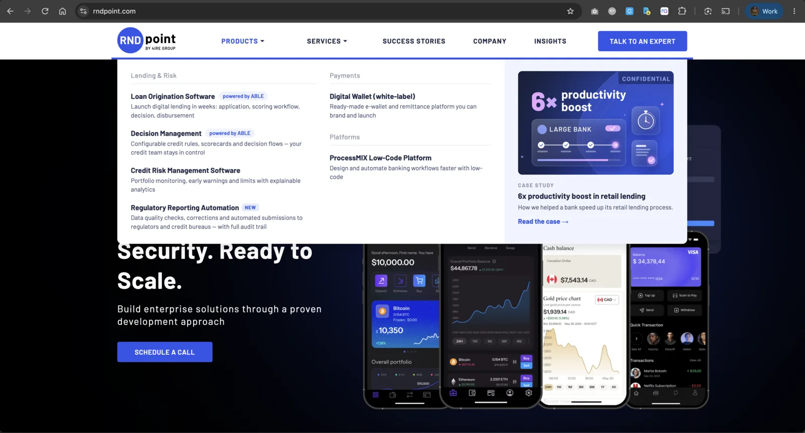
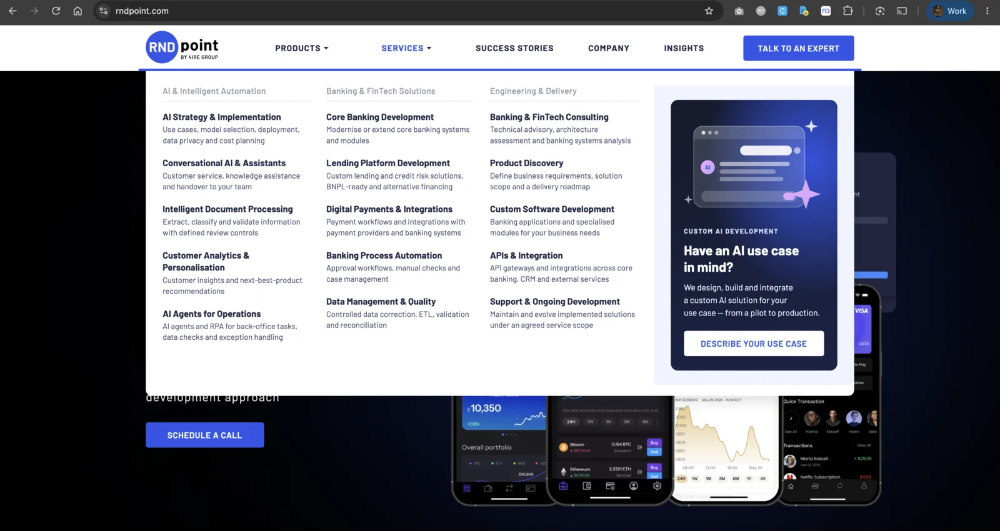
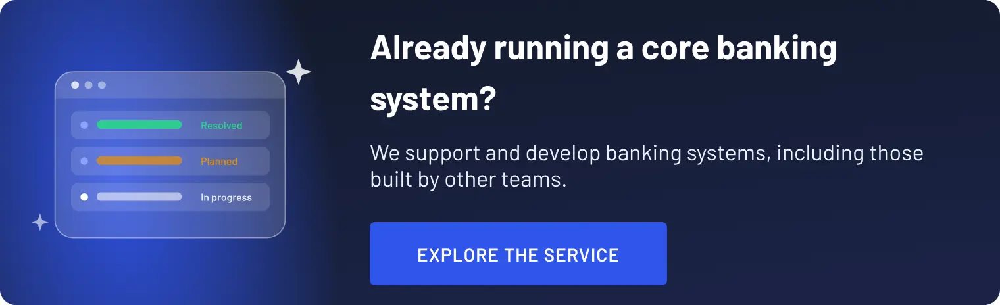
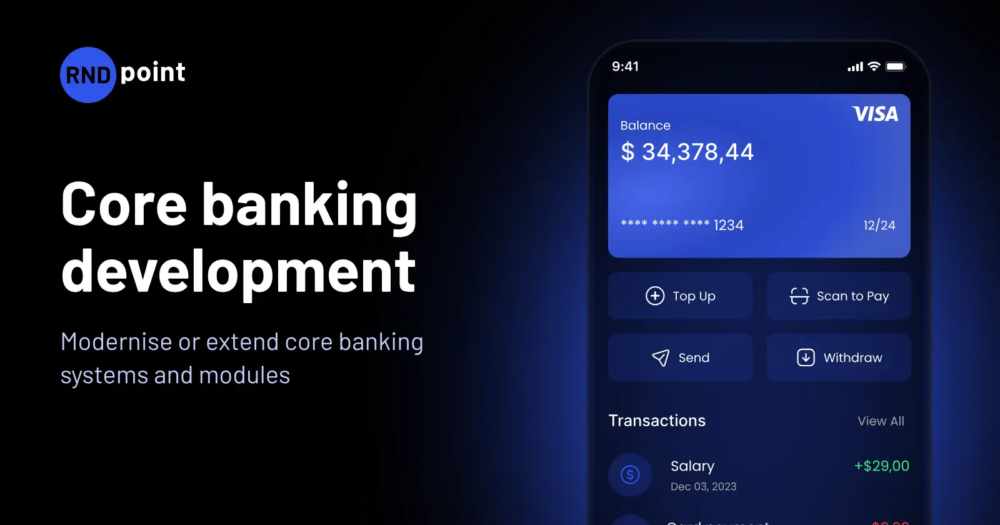
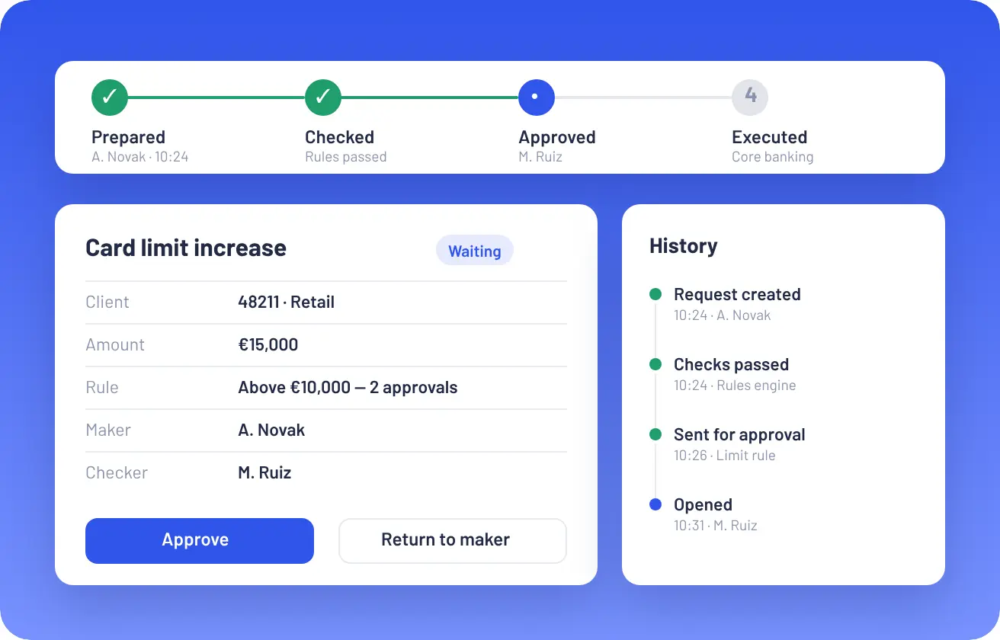
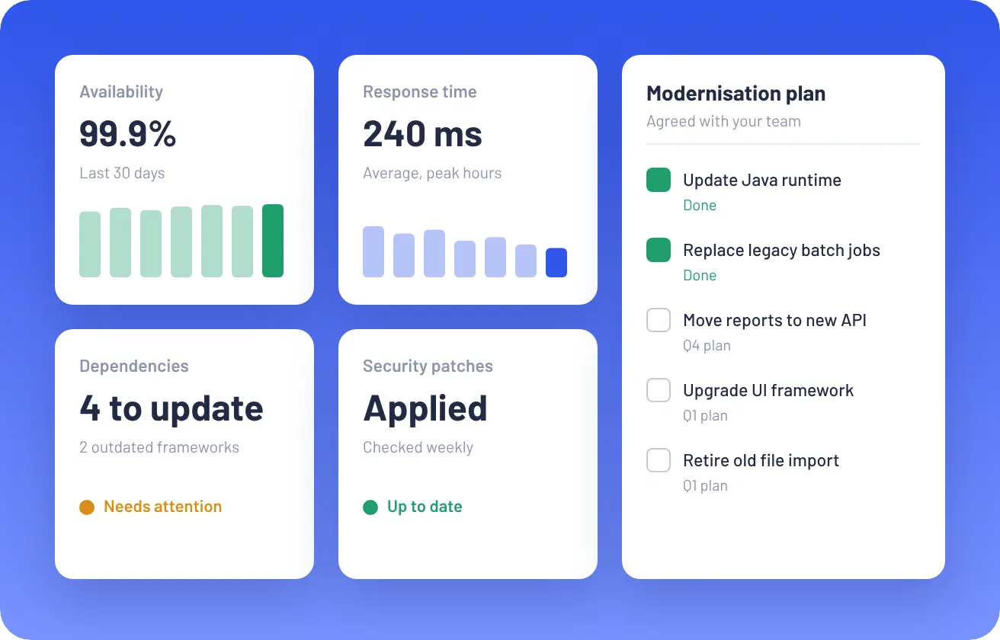
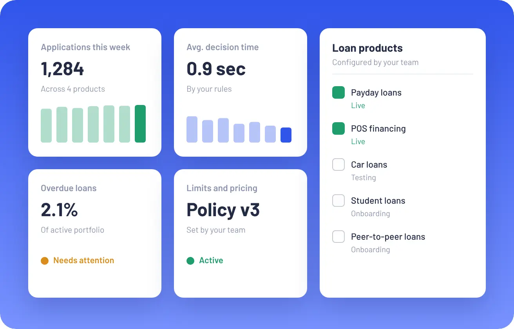
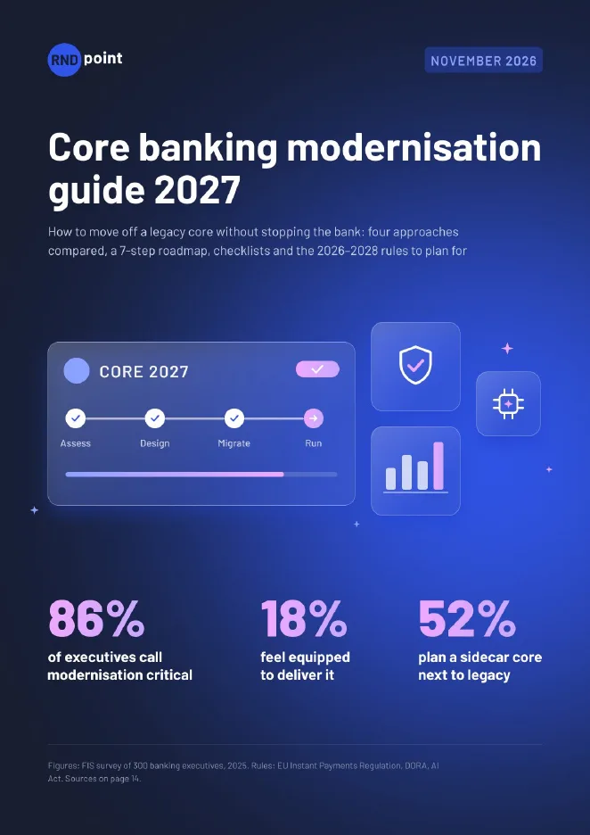
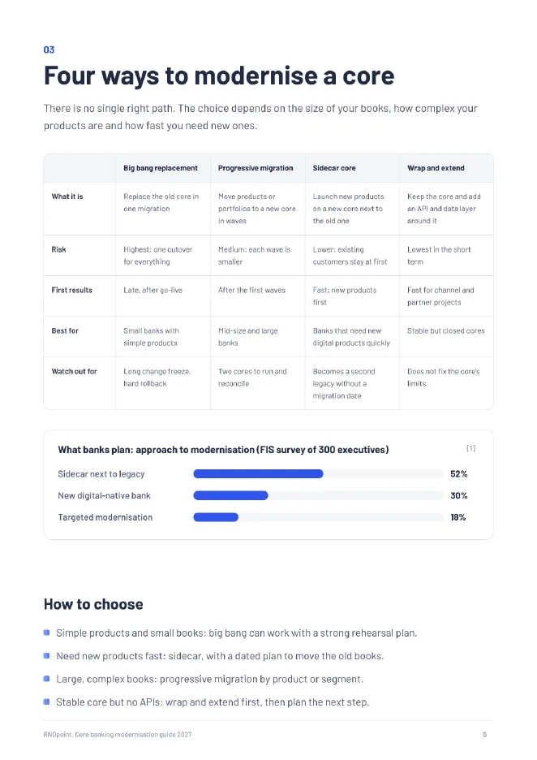
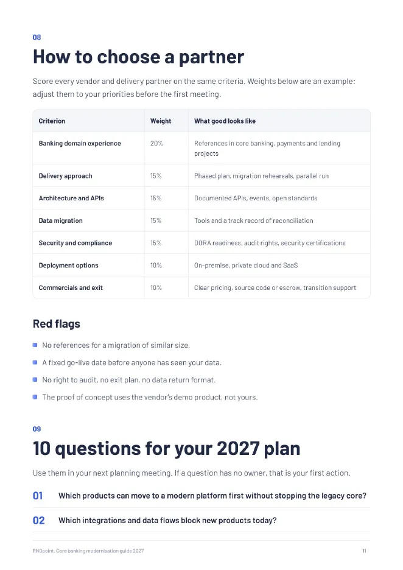

Two fintech websites, audited, measured and rebuilt with AI agents.
RNDpoint and ABLE Platform, August to November 2026. I found what was broken, rebuilt the tracking, cut the page weight and built a page system the team can reuse.
The work in numbers
The baseline came from a direct crawl of HTML, robots.txt and sitemaps, a manual review of 157 pages (118 on RNDpoint, 39 on ABLE) and an independent re-check of the findings.
UTM fields held the text "false", so most leads could not be tied to a channel. Analytics and tag accounts sat under people nobody could name.
The audit covers both sites and lives as an HTML tracker, a PDF of about 185 pages and a Notion version. It is the spine of everything below: problem, diagnosis, fix list.
Findings per site, critical first
Clean-up plan for the 131 RNDpoint pages: what happens to each
On 14 to 16 October I created two GA4 properties and two Tag Manager containers (5 and 7 tags), put every tag behind the cookie banner with Google Consent Mode v2 and added a generate_lead key event fired by HubSpot form success. From the outside I checked both states: without consent GA4 sends only anonymised signals (G100), after consent a full page view (G111).
RNDpoint, first full week of data (6 to 12 Nov), sessions by channel, share of 60
The new properties have one week of history, so I show shares, not volumes. On ABLE the report still records zero key events because the HubSpot form event was not yet marked as a key event: an open task.
Search Console access for both sites was restored under the company account. I submitted the sitemap (126 of 131 RNDpoint pages indexed), opened robots.txt to AI crawlers, added FAQ pages with FAQPage markup and cut the ABLE llms.txt from 216 KB to 5 KB.
ABLE, four weeks to 10 Nov: search impressions and clicks, indexed
Impressions rose by about half and the average position moved from about 24.5 to about 19.9. Clicks stayed flat. The page says so on purpose: a 16-month decline in clicks started long before this work, and four weeks are too few to claim growth.
The same exports gave a work list: a services page with about 25,000 impressions and two clicks, which becomes the snippet and click-rate plan. On RNDpoint two spikes on 3 and 5 November were a suspected bot anomaly from one blog page; I excluded them from every comparison.
On ABLE the server was fast and the weight was the problem. The fixes went in order of effect: images to SVG and WebP, unused form plugins switched off, scripts deferred (27 of 28), SVG compressed with svgo.
ABLE loan origination page, mobile, measured on 12 and 13 Nov. Grey before, white after
Image weight and compression
Limits I report myself: the before and after measurements are one day apart, and lazy loading still works on only a few images of the ABLE home page because the theme bypasses the optimiser. For RNDpoint I counted 458 raster images, 153 of them over 300 KB, and have a baseline; the after-measurement is still to do.
Instead of designing page after page I built a block-based template for WordPress with ACF: editors assemble a service page from blocks without a developer. 13 JSON presets load full pages in one click, 165 block instances across 14 block types, around 33 PHP files, quiet motion with a fallback for reduced-motion and no-script.
Block types across the 13 presets
Menu and promo banner, drawn in Figma and shipped to the live sites:




Illustrations for the new service pages, delivered as SVG so they stay sharp and light:



The same system produced a practical lead magnet, the Core banking modernisation guide 2027 (15 A4 pages designed in Figma):



On RNDpoint eight forms became two, with hidden source fields so every lead carries its origin. Zoho was replaced by HubSpot; the failed first attempt was rebuilt from logs into a staged plan with checkpoints. A scan of 132 pages against EU AI Act and promise wording produced a workbook of 40 edits, and for ABLE I mapped that AI credit scoring of individuals falls under high-risk obligations from December 2027. Privacy, Cookie, Terms and Responsible AI texts were updated for the new setup.
This is the working split on this project.
AI agents
- Crawled and scanned pages against the AI Act wording
- Built registers of titles, alt texts and raster logos
- Drafted page presets and first versions of texts
- Cross-checked numbers between reports and exports
- Produced SVG and Open Graph variants at volume
Me
- Decided which findings were critical
- Removed unconfirmed claims and kept only sourced ones
- Excluded the bot traffic from every comparison
- Decided when a page was safe to publish
- Double-checked the analytics figures and the technical images drawn in Figma against the sources
- Turned open points into short questions for the owner
What the work left behind, by type.
- Reports: the audit (HTML, PDF of about 185 pages, Notion version), a status report for the director kept in sync through dated backups, two analytics reports for 6 to 13 November, the GA4 and Tag Manager migration document, a 28-file handover archive.
- Data: four Search Console export sets, five GA4 CSV exports, two Tag Manager import files, a 12-sheet SEO workbook and a work log of 141 dated rows from 8 October to 17 November.
- Assets: SVG illustrations (ten selector images alone went from 2,824 to 729 KB), logos, Open Graph images at 1200 by 630, hero snippets.
- Code: 13 JSON presets, around 33 PHP files, small plugins for the promo block, booking link and FAQ accordion.
- Search clicks did not grow in the measured four weeks; the long decline started earlier.
- GA4 has one week of data; ABLE shows zero key events until the form event is marked.
- RNDpoint speed has a baseline but no after-measurement yet.
- Only 3 of 11 new service pages were showing in Search Console after the first week, a normal indexing delay that I track weekly.
Search and analytics charts are indexed or shown as shares, not absolute client figures. Speed numbers are for one page on mobile.
Timeline
- 1 AugAudit of both sites
- 24–25 AugABLE: Zoho off, a foreign script removed
- 12 OctSearch Console restored for both sites
- 14–16 OctGA4, Tag Manager and cookie banner rebuilt; RND live on 15 Oct
- 2–6 NovNew service pages published; AI Act wording fixes
- 12–13 NovABLE PageSpeed 59 to 92
- 17 NovPage template 1.1.10 and handover archive